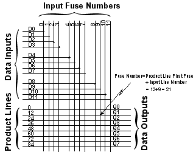
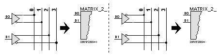

The MATRIX primitive model implements the functional behaviour of the AND fuse matrix found in most PLD devices, as shown below:

The matrix consists of a set of inputs and a set of outputs. Each output is driven by a product line line which, in the default state is connected to all the input lines by fuse links. The JEDEC file specifies which fuses should remain intact (input connected to output product line) or blown (input open-circuit to output product line). A given output is said to be active when all the inputs connected to its product line are also active; if any input is inactive, the output is also inactive. Thus, the output implements the logical-AND (i.e. the product term) of all its inputs.
In the above diagram, there are twelve data inputs (D0 through D11) and eight data outputs (Q0 through Q7). The output Q1 has a product line whose fuse numbers are 12 (input D0) through to 23 (input D11). If the JEDEC file specified the fuses for this line as 010101110111, this would evaluate to Q1=D0 AND D2 AND D4 AND D8.
Most PLD devices have an AND matrix fed by both the true and the complement of the input data, so allowing the output product terms to include the equivalent of a logical-NOT. In general, such devices have a matrix with twice the number of inputs as there are physical pins; the even matrix inputs then consist of the true data and the odd inputs of the inverted data. For such devices, the internal input data word is twice the width of the external data word.
You can model such PLD devices most simply by creating a MATRIX primitive with the number of inputs equal to twice the number of physical pins, and then driving the MATRIX with both true and complementary data. However, as nearly all PLDs require both true and complementary data, and as the inversion of data externally (using separate INVERTOR primitives on each data input) is non-optimum, the MATRIX primitive provides a means of producing internal data words that are twice the width of the number of model inputs and which contain both true and complementary data. This model function is controlled by the INVPINS property, as shown in the following two diagrams which relate typical PLD input stages to the property's usage within the MATRIX primitive model:

Thus, in a PLD where the even product line offsets (0, 2, etc.) are the true data and the odd product line offsets the complementary data (shown above left), you need to create a MATRIX model with the same number of inputs as there are physical pins and to specify the INVPINS=+ property. Similarly, in a PLD where the even product line offsets (0, 2, etc.) are the complementary data and the odd product line offsets the true data (shown above right), you need to create a MATRIX model with the same number of inputs as there are physical pins and to specify the INVPINS=- property. The former is by far the most common. Note that specifying the INVPINS property results in the internal data width of the MATRIX primitive being twice the width of the external (i.e. number of D# inputs) width: this must be accounted for when specifying fuse numbers (see below).
The MATRIX primitive requires fuse numbers to be specified for the first fuse in each matrix outputs product line. You can specify these fuse numbers in one of two ways. If the PLDs AND matrix has irregular fuse numbering you can use the alternative properties FUSE0, FUSE1, FUSE2, etc. to specify the number of the first fuse in the Q0, Q1 and Q2 outputs' respective product lines. For the example above, we would thus need eight property assignments, as follows:
FUSE0=0
FUSE1=12
...
FUSE7=84
Alternatively, if the product line first fuse numbers are all a fixed number apart, you can use the FUSEBASE property to specify the first product line's first fuse number and the FUSEINCR property to specify the increment to the next product line's first fuse number. For the example above, we would thus only need two property assignments, as follows:
FUSEBASE=0
FUSEINCR=12
In general, for most PLDs, the FUSEINCR property would be assigned a value equal to the width of the model's internal input data word - this will be the same as the number of D# model inputs if the INVPINS property is not specified and twice the number of D# model inputs if the INVPINS property is specified.
Note that if you specify the FUSEINCR property, then it (and the FUSEBASE property) will be used in preference to any FUSEn assignments. Further, both methods only allow you to specify the number of the first fuse for each product line: the MATRIX primitive model automatically numbers the remainder of the fuses in the product term from left to right according to the internal data width.
| Pin | Type | Pin Set | Description |
D# |
Input |
#1 |
Data Inputs |
Q# |
Output |
#2 |
Data Outputs |
| Property | Type | Meaning | Default | Notes |
| FILE | Text | Name of JEDEC file. | See Note | [1] |
| INVPINS | Text | Generate Inverted inputs | See Note | [2] |
| FUSEBASE | Numeric | Fuse Number of 1st P.Line. | 0 | [3] |
| FUSEINCR | Numeric | Increment For Next P. Line. | See Note | [3] |
| FUSEn | Numeric | Number for nth P.Line. | 0 | [3] |
1. The FILE property specifies the path and filename of the JEDEC file to be used for fuse values. This property must be specified - there is no default.
2. If specified, the INVPINS property causes the model to create an internal data word containing both the input data word at the D# inputs and its complement.
3. If FUSEINCR is assigned, then the FUSEBASE and FUSEINCR properties will be used to specify the first fuse numbers of each outputs product line. If not specified, then FUSEn properties will be expected instead.
See Also: